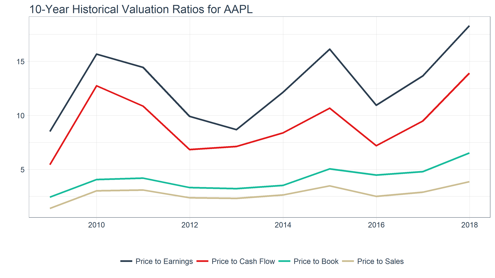

vignettes/TQ01-core-functions-in-tidyquant.Rmd
A few core functions with a lot of power
The tidyquant package has a core functions with a lot of power. Few functions means less of a learning curve for the user, which is why there are only a handful of functions the user needs to learn to perform the vast majority of financial analysis tasks. The main functions are:
Get a Stock Index, tq_index(), or a Stock Exchange, tq_exchange(): Returns the stock symbols and various attributes for every stock in an index or exchange. Eighteen indexes and three exchanges are available.
Get Quantitative Data, tq_get(): A one-stop shop to get data from various web-sources.
Transmute, tq_transmute(), and Mutate, tq_mutate(), Quantitative Data: Perform and scale financial calculations completely within the tidyverse. These workhorse functions integrate the xts, zoo, quantmod, and TTR packages.
Performance analysis, tq_performance(), and portfolio aggregation, tq_portfolio(): The PerformanceAnalytics integration enables analyzing performance of assets and portfolios. Because of the breadth of this topic, refer to Performance Analysis with tidyquant for a tutorial on these functions.
A wide range of stock index / exchange lists can be retrieved using tq_index(). To get a full list of the options, use tq_index_options().
## [1] "RUSSELL1000" "RUSSELL2000" "RUSSELL3000" "DOW" "DOWGLOBAL"
## [6] "SP400" "SP500" "SP600" "SP1000"Set x as one of the options in the list of options above to get the desired stock index / exchange.
The data source is www.marketvolume.com.
Stock lists for three stock exchanges are available: NASDAQ, NYSE, and AMEX. If you forget, just use tq_exchange_options(). We can easily get the full list of stocks on the NASDAQ exchange.
## # A tibble: 3,307 x 7
## symbol company last.sale.price market.cap ipo.year sector industry
## <chr> <chr> <dbl> <chr> <dbl> <chr> <chr>
## 1 PIH 1347 Pro~ 6.80 $40.7M 2014. Finance Property-~
## 2 PIHPP 1347 Pro~ 25.0 <NA> NA Finance Property-~
## 3 TURN 180 Degr~ 1.92 $59.75M NA Finance Finance/I~
## 4 FLWS 1-800 FL~ 12.8 $822.85M 1999. Consum~ Other Spe~
## 5 FCCY 1st Cons~ 21.8 $176.44M NA Finance Savings I~
## 6 SRCE 1st Sour~ 51.2 $1.38B NA Finance Major Ban~
## 7 VNET 21Vianet~ 6.32 $705.63M 2011. Techno~ Computer ~
## 8 TWOU 2U, Inc. 83.3 $4.39B 2014. Techno~ Computer ~
## 9 JOBS 51job, I~ 91.3 $5.65B 2004. Techno~ Diversifi~
## 10 CAFD 8point3 ~ 12.2 $960.98M 2015. Public~ Electric ~
## # ... with 3,297 more rowsThe data source is the NASDAQ.
The tq_get() function is used to collect data by changing the get argument. The options include stock prices, key statistics, dividends and splits from Yahoo Finance, key ratios from Morningstar, financial statements from Google Finance, metal prices and exchange rates from Oanda, and economic data from the FRED database. Use tq_get_options() to see the full list.
## [1] "stock.prices" "stock.prices.google" "stock.prices.japan"
## [4] "financials" "key.ratios" "dividends"
## [7] "splits" "economic.data" "exchange.rates"
## [10] "metal.prices" "quandl" "quandl.datatable"
## [13] "alphavantager" "rblpapi"The stock prices can be retrieved succinctly using get = "stock.prices". This returns stock price data from Yahoo Finance.
## # A tibble: 7,127 x 7
## date open high low close volume adjusted
## <date> <dbl> <dbl> <dbl> <dbl> <dbl> <dbl>
## 1 1990-01-02 1.26 1.34 1.25 1.33 45799600. 0.124
## 2 1990-01-03 1.36 1.36 1.34 1.34 51998800. 0.125
## 3 1990-01-04 1.37 1.38 1.33 1.34 55378400. 0.125
## 4 1990-01-05 1.35 1.37 1.32 1.35 30828000. 0.126
## 5 1990-01-08 1.34 1.36 1.32 1.36 25393200. 0.126
## 6 1990-01-09 1.36 1.36 1.32 1.34 21534800. 0.125
## 7 1990-01-10 1.34 1.34 1.28 1.29 49929600. 0.120
## 8 1990-01-11 1.29 1.29 1.23 1.23 52763200. 0.115
## 9 1990-01-12 1.22 1.24 1.21 1.23 42974400. 0.115
## 10 1990-01-15 1.23 1.28 1.22 1.22 40434800. 0.114
## # ... with 7,117 more rowsAn alternative source is from Google Finance, which can be retrieved using get = "stock.prices.google".
aapl_prices_google <- tq_get("AAPL", get = "stock.prices.google", from = " 1990-01-01")
aapl_prices_google## [1] NAYahoo Japan stock prices can be retrieved using a similar call, get = "stock.prices.japan".
Dividends are obtained using get = "dividends".
## # A tibble: 47 x 2
## date dividends
## <date> <dbl>
## 1 1990-02-16 0.110
## 2 1990-05-21 0.110
## 3 1990-08-20 0.110
## 4 1990-11-16 0.120
## 5 1991-02-15 0.120
## 6 1991-05-20 0.120
## 7 1991-08-19 0.120
## 8 1991-11-18 0.120
## 9 1992-02-14 0.120
## 10 1992-06-01 0.120
## # ... with 37 more rowsStock splits are obtained using get = "splits".
## # A tibble: 3 x 2
## date splits
## <date> <dbl>
## 1 2000-06-21 0.500
## 2 2005-02-28 0.500
## 3 2014-06-09 0.143The data source is Yahoo Finance and Yahoo Finance Japan.
For any given stock, a total of six financials statements are retrieved as nested tibbles, one for each combination of statement type (Income Statement, Balance Sheet, and Cash Flow) and period (by annual and quarter).
The statement information can be extracted by selecting (dplyr::select()) and filtering (dplyr::filter()) to the desired statement and unnesting (tidyr::unnest()) the results.
A slightly more powerful example is looking at all quarterly statements together. This is easy to do with unnest and spread from the tidyr package.
The data source is Google Finance.
The next two getters, key ratios and key stats, work in tandem. Key ratios provide the historical annual metrics on the stock / company for the last 10 years. Key stats provide the real-time metrics on the stock / company.
For any given stock, the historical key ratios are available for 10 years, and are classified into the following sections:
To get the key ratios:
## # A tibble: 7 x 2
## section data
## <chr> <list>
## 1 Financials <tibble [150 x 5]>
## 2 Profitability <tibble [170 x 5]>
## 3 Growth <tibble [160 x 5]>
## 4 Cash Flow <tibble [50 x 5]>
## 5 Financial Health <tibble [240 x 5]>
## 6 Efficiency Ratios <tibble [80 x 5]>
## 7 Valuation Ratios <tibble [40 x 5]>The ratios can be filtered and unnested to peel away the hierarchical nesting layers and access the underlying data:
## # A tibble: 40 x 6
## section sub.section group category date value
## <chr> <chr> <dbl> <chr> <date> <dbl>
## 1 Valuation Ratios Valuation Ratios 86. Price to Earn~ 2008-12-31 8.51
## 2 Valuation Ratios Valuation Ratios 86. Price to Earn~ 2009-12-31 15.7
## 3 Valuation Ratios Valuation Ratios 86. Price to Earn~ 2010-12-31 14.4
## 4 Valuation Ratios Valuation Ratios 86. Price to Earn~ 2011-12-30 9.92
## 5 Valuation Ratios Valuation Ratios 86. Price to Earn~ 2012-12-31 8.68
## 6 Valuation Ratios Valuation Ratios 86. Price to Earn~ 2013-12-31 12.1
## 7 Valuation Ratios Valuation Ratios 86. Price to Earn~ 2014-12-31 16.1
## 8 Valuation Ratios Valuation Ratios 86. Price to Earn~ 2015-12-31 10.9
## 9 Valuation Ratios Valuation Ratios 86. Price to Earn~ 2016-12-30 13.7
## 10 Valuation Ratios Valuation Ratios 86. Price to Earn~ 2017-12-29 18.3
## # ... with 30 more rowsOnce we have a section, we can quickly visualize the ratios:
aapl_key_ratios %>%
filter(section == "Valuation Ratios") %>%
unnest() %>%
ggplot(aes(x = date, y = value)) +
geom_line(aes(col = factor(category, levels = c("Price to Earnings", "Price to Cash Flow", "Price to Book", "Price to Sales"))),
size = 1) +
labs(title = "10-Year Historical Valuation Ratios for AAPL", x = "",
y = "", col = "") +
theme_tq() +
scale_color_tq()
The data source is Morningstar.
The Key Statistics have been discontinued by Yahoo Finance. We are looking for an alternative solution for real-time finanical data.
Quandl provides access to a vast number of financial and economic databases. The Quandl package has been integrated into tidyquant as follows.
To make full use of the integration we recommend you set your api key. To do this create or sign into your Quandl account and go to your account api key page.
Searching Quandl from within the R console is possible with quandl_search(), a wrapper for Quandl::Quandl.search(). An example search is shown below. The only required argument is query. You can also visit the Quandl Search webpage to search for available database codes.
Getting data is integrated into tq_get(). Two get options exist to retrieve Quandl data:
get = "quandl": Get’s Quandl time series data. A wrapper for Quandl().get = "quandl.datatable": Gets Quandl datatables (larger data sets that may not be time series). A wrapper for Quandl.datatable().Getting data from Quandl can be achieved in much the same way as the other “get” options. Just pass the “codes” for the data along with desired arguments for the underlying function.
The following uses get = "quandl" and the “WIKI” database to download daily stock prices for FB and AAPL in 2016. The output is a tidy data frame.
The following time series options are available to be passed to the underlying Quandl() function:
start_date (from) = “yyyy-mm-dd” | end_date (to) = “yyyy-mm-dd”column_index = numeric column number (e.g. 1)rows = numeric row number indicating first n rows (e.g. 100)collapse = “none”, “daily”, “weekly”, “monthly”, “quarterly”, “annual”transform = “none”, “diff”, “rdiff”, “cumul”, “normalize”Here’s an example to get period returns of the adj.close (column index 11) using the column_index, collapse and transform arguments.
c("WIKI/FB", "WIKI/AAPL") %>%
tq_get(get = "quandl",
from = "2007-01-01",
to = "2016-12-31",
column_index = 11,
collapse = "annual",
transform = "rdiff") Datatables are larger data sets. These can be downloaded using get = "quandl.datatable". Note that the time series arguments do not work with data tables.
Here’s several examples of Zacks Fundamentals Collection B
# Zacks Fundamentals Collection B (DOW 30 Available to non subscribers)
tq_get("ZACKS/FC", get = "quandl.datatable") # Zacks Fundamentals Condensed
tq_get("ZACKS/FR", get = "quandl.datatable") # Zacks Fundamental Ratios
tq_get("ZACKS/MT", get = "quandl.datatable") # Zacks Master Table
tq_get("ZACKS/MKTV", get = "quandl.datatable") # Zacks Market Value Supplement
tq_get("ZACKS/SHRS", get = "quandl.datatable") # Zacks Shares Out SupplementAlpha Vantage provides access to a real-time and historical financial data. The alphavantager package, a lightweight R interface, has been integrated into tidyquant as follows. The benefit of the integration is the scalability since we can now get multiple symbols returned in a tidy format.
To make full use of the integration you need to get an API key and then set your api key. If you don’t have one already, go to Alpha Vantage account and get your FREE API key. You can then set it as follows:
Getting data is simple as the structure follows the Alpha Vantage API documentation. For example, if you wish to retrieve intraday data at 5 minute intervals for FB and MSFT, you can build the parameters x = c("FB", "MSFT"), get = "alphavantager", av_fun = "TIME_SERIES_INTRADAY", interval = "5min". The familiar x and get are the same as you always use. The av_fun argument comes from alphavantager::av_get() and the Alpha Vantage documentation. The interval argument comes from the docs as well.
Bloomberg provides access to arguably the most comprehensive financial data and is actively used by most major financial instutions that work with financial data. The Rblpapi package, an R interface to Bloomberg, has been integrated into tidyquant as follows. The benefit of the integration is the scalability since we can now get multiple symbols returned in a tidy format.
To make full use of the integration you need to have a Bloomberg Terminal account (Note this is not a free service). If you have Bloomberg Terminal running on your machine, you can connect as follows:
Getting data is simple as the structure follows the Rblpapi API documentation. For example, if you wish to retrieve monthly data for SPX Index and AGTHX Equity, you can build the tq_get parameters as follows:
x = c('SPX Index','ODMAX Equity')get = "rblpapi"rblpapi_fun = "bdh" Note that “bdh” is the default, and options include “bdh” (Bloomberg Data History), “bds” (Bloomberg Data Set), and “bdp” (Bloomberg Data Point)from / to These get passed to start.date and end.date and can be provided in “YYYY-MM-DD” character format. Note that start.date and end.date from Rblpapi can be used but must be converted to date or datetime.rblpapi_fun. See Rblpapi documentation.A wealth of economic data can be extracted from the Federal Reserve Economic Data (FRED) database. The WTI Crude Oil Prices are shown below.
## # A tibble: 2,680 x 2
## date price
## <date> <dbl>
## 1 2008-01-01 NA
## 2 2008-01-02 99.6
## 3 2008-01-03 99.2
## 4 2008-01-04 97.9
## 5 2008-01-07 95.1
## 6 2008-01-08 96.4
## 7 2008-01-09 95.6
## 8 2008-01-10 93.9
## 9 2008-01-11 92.7
## 10 2008-01-14 94.2
## # ... with 2,670 more rowsThe FRED contains literally over 10K data sets that are free to use. See the FRED categories to narrow down the data base and to get data codes.
Exchange rates are entered as currency pairs using “/” notation (e.g "EUR/USD"), and by setting get = "exchange.rates".
eur_usd <- tq_get("EUR/USD",
get = "exchange.rates",
from = Sys.Date() - lubridate::days(10))
eur_usd ## [1] NAThe data source is Oanda, and list of currencies to compare can be found on Oanda’s currency converter. It may make more sense to get this data from the FRED (See Economic Data) since the max period for Oanda is 180 days.
Metal prices are very similar to stock prices. Set get = "metal.prices" along with the appropriate commodity symbol (e.g. XAU (gold) , XAG (silver), XPD (palladium), or XPT (platinum)).
plat_price_eur <- tq_get("plat", get = "metal.prices",
from = Sys.Date() - lubridate::days(10),
base.currency = "EUR")
plat_price_eur ## [1] NAThe data source is Oanda. It may make more sense to get this data from the FRED (See Economic Data) since the max period for Oanda is 180 days.
Mutating functions enable the xts/zoo, quantmod and TTR functions to shine. We’ll touch on the mutation functions briefly using the FANG data set, which consists of daily prices for FB, AMZN, GOOG, and NFLX from the beginning of 2013 to the end of 2016. We’ll apply the functions to grouped data sets to get a feel for how each works
## # A tibble: 4,032 x 8
## symbol date open high low close volume adjusted
## <chr> <date> <dbl> <dbl> <dbl> <dbl> <dbl> <dbl>
## 1 FB 2013-01-02 27.4 28.2 27.4 28.0 69846400. 28.0
## 2 FB 2013-01-03 27.9 28.5 27.6 27.8 63140600. 27.8
## 3 FB 2013-01-04 28.0 28.9 27.8 28.8 72715400. 28.8
## 4 FB 2013-01-07 28.7 29.8 28.6 29.4 83781800. 29.4
## 5 FB 2013-01-08 29.5 29.6 28.9 29.1 45871300. 29.1
## 6 FB 2013-01-09 29.7 30.6 29.5 30.6 104787700. 30.6
## 7 FB 2013-01-10 30.6 31.5 30.3 31.3 95316400. 31.3
## 8 FB 2013-01-11 31.3 32.0 31.1 31.7 89598000. 31.7
## 9 FB 2013-01-14 32.1 32.2 30.6 31.0 98892800. 31.0
## 10 FB 2013-01-15 30.6 31.7 29.9 30.1 173242600. 30.1
## # ... with 4,022 more rowsFor a detailed walkthrough of the compatible functions, see the next vignette in the series, R Quantitative Analysis Package Integrations in tidyquant.
Transmute the results of tq_get(). Transmute here holds almost the same meaning as in dplyr, only the newly created columns will be returned, but with tq_transmute(), the number of rows returned can be different than the original data frame. This is important for changing periodicity. An example is periodicity aggregation from daily to monthly.
FANG %>%
group_by(symbol) %>%
tq_transmute(select = adjusted, mutate_fun = to.monthly, indexAt = "lastof")## # A tibble: 192 x 3
## # Groups: symbol [4]
## symbol date adjusted
## <chr> <date> <dbl>
## 1 FB 2013-01-31 31.0
## 2 FB 2013-02-28 27.2
## 3 FB 2013-03-31 25.6
## 4 FB 2013-04-30 27.8
## 5 FB 2013-05-31 24.4
## 6 FB 2013-06-30 24.9
## 7 FB 2013-07-31 36.8
## 8 FB 2013-08-31 41.3
## 9 FB 2013-09-30 50.2
## 10 FB 2013-10-31 50.2
## # ... with 182 more rowsLet’s go through what happened. select allows you to easily choose what columns get passed to mutate_fun. In example above, adjusted selects the “adjusted” column from data, and sends it to the mutate function, to.monthly, which mutates the periodicity from daily to monthly. Additional arguments can be passed to the mutate_fun by way of .... We are passing the indexAt argument to return a date that matches the first date in the period.
Returns from FRED, Oanda, and other sources do not have open, high, low, close (OHLC) format. However, this is not a problem with select. The following example shows how to transmute WTI Crude daily prices to monthly prices. Since we only have a single column to pass, we can leave the select argument as NULL which selects all columns by default. This sends the price column to the to.period mutate function.
wti_prices <- tq_get("DCOILWTICO", get = "economic.data")
wti_prices %>%
tq_transmute(mutate_fun = to.period,
period = "months",
col_rename = "WTI Price")## # A tibble: 124 x 2
## date `WTI Price`
## <date> <dbl>
## 1 2008-01-31 91.7
## 2 2008-02-29 102.
## 3 2008-03-31 102.
## 4 2008-04-30 114.
## 5 2008-05-30 127.
## 6 2008-06-30 140.
## 7 2008-07-31 124.
## 8 2008-08-29 116.
## 9 2008-09-30 101.
## 10 2008-10-31 68.1
## # ... with 114 more rowsAdds a column or set of columns to the tibble with the calculated attributes (hence the original tibble is returned, mutated with the additional columns). An example is getting the MACD from close, which mutates the original input by adding MACD and Signal columns. Note that we can quickly rename the columns using the col_rename argument.
FANG %>%
group_by(symbol) %>%
tq_mutate(select = close,
mutate_fun = MACD,
col_rename = c("MACD", "Signal"))## # A tibble: 4,032 x 10
## # Groups: symbol [4]
## symbol date open high low close volume adjusted MACD Signal
## <chr> <date> <dbl> <dbl> <dbl> <dbl> <dbl> <dbl> <dbl> <dbl>
## 1 FB 2013-01-02 27.4 28.2 27.4 28.0 6.98e7 28.0 NA NA
## 2 FB 2013-01-03 27.9 28.5 27.6 27.8 6.31e7 27.8 NA NA
## 3 FB 2013-01-04 28.0 28.9 27.8 28.8 7.27e7 28.8 NA NA
## 4 FB 2013-01-07 28.7 29.8 28.6 29.4 8.38e7 29.4 NA NA
## 5 FB 2013-01-08 29.5 29.6 28.9 29.1 4.59e7 29.1 NA NA
## 6 FB 2013-01-09 29.7 30.6 29.5 30.6 1.05e8 30.6 NA NA
## 7 FB 2013-01-10 30.6 31.5 30.3 31.3 9.53e7 31.3 NA NA
## 8 FB 2013-01-11 31.3 32.0 31.1 31.7 8.96e7 31.7 NA NA
## 9 FB 2013-01-14 32.1 32.2 30.6 31.0 9.89e7 31.0 NA NA
## 10 FB 2013-01-15 30.6 31.7 29.9 30.1 1.73e8 30.1 NA NA
## # ... with 4,022 more rowsNote that a mutation can occur if, and only if, the mutation has the same structure of the original tibble. In other words, the calculation must have the same number of rows and row.names (or date fields), otherwise the mutation cannot be performed.
A very powerful example is applying custom functions across a rolling window using rollapply. A specific example is using the rollapply function to compute a rolling regression. This example is slightly more complicated so it will be broken down into three steps:
tq_mutate(mutate_fun = rollapply)
Step 1: Get Returns
First, get combined returns. The asset and baseline returns should be in wide format, which is needed for the lm function in the next step.
fb_returns <- tq_get("FB", get = "stock.prices", from = "2016-01-01", to = "2016-12-31") %>%
tq_transmute(adjusted, periodReturn, period = "weekly", col_rename = "fb.returns")
xlk_returns <- tq_get("XLK", from = "2016-01-01", to = "2016-12-31") %>%
tq_transmute(adjusted, periodReturn, period = "weekly", col_rename = "xlk.returns")
returns_combined <- left_join(fb_returns, xlk_returns, by = "date")
returns_combined## # A tibble: 52 x 3
## date fb.returns xlk.returns
## <date> <dbl> <dbl>
## 1 2016-01-08 -0.0478 -0.0516
## 2 2016-01-15 -0.0242 -0.0187
## 3 2016-01-22 0.0313 0.0264
## 4 2016-01-29 0.146 0.0213
## 5 2016-02-05 -0.0725 -0.0422
## 6 2016-02-12 -0.0198 -0.00582
## 7 2016-02-19 0.0251 0.0354
## 8 2016-02-26 0.0320 0.0148
## 9 2016-03-04 0.00436 0.0281
## 10 2016-03-11 0.00941 0.0106
## # ... with 42 more rowsStep 2: Create a custom function
Next, create a custom regression function, which will be used to apply over the rolling window in Step 3. An important point is that the “data” will be passed to the regression function as an xts object. The timetk::tk_tbl function takes care of converting to a data frame for the lm function to work properly with the columns “fb.returns” and “xlk.returns”.
regr_fun <- function(data) {
coef(lm(fb.returns ~ xlk.returns, data = timetk::tk_tbl(data, silent = TRUE)))
}Step 3: Apply the custom function
Now we can use tq_mutate() to apply the custom regression function over a rolling window using rollapply from the zoo package. Internally, since we left select = NULL, the returns_combined data frame is being passed automatically to the data argument of the rollapply function. All you need to specify is the mutate_fun = rollapply and any additional arguments necessary to apply the rollapply function. We’ll specify a 12 week window via width = 12. The FUN argument is our custom regression function, regr_fun. It’s extremely important to specify by.column = FALSE, which tells rollapply to perform the computation using the data as a whole rather than apply the function to each column independently. The col_rename argument is used to rename the added columns.
returns_combined %>%
tq_mutate(mutate_fun = rollapply,
width = 12,
FUN = regr_fun,
by.column = FALSE,
col_rename = c("coef.0", "coef.1"))## # A tibble: 52 x 5
## date fb.returns xlk.returns coef.0 coef.1
## <date> <dbl> <dbl> <dbl> <dbl>
## 1 2016-01-08 -0.0478 -0.0516 NA NA
## 2 2016-01-15 -0.0242 -0.0187 NA NA
## 3 2016-01-22 0.0313 0.0264 NA NA
## 4 2016-01-29 0.146 0.0213 NA NA
## 5 2016-02-05 -0.0725 -0.0422 NA NA
## 6 2016-02-12 -0.0198 -0.00582 NA NA
## 7 2016-02-19 0.0251 0.0354 NA NA
## 8 2016-02-26 0.0320 0.0148 NA NA
## 9 2016-03-04 0.00436 0.0281 NA NA
## 10 2016-03-11 0.00941 0.0106 NA NA
## # ... with 42 more rows## # A tibble: 52 x 3
## date fb.returns xlk.returns
## <date> <dbl> <dbl>
## 1 2016-01-08 -0.0478 -0.0516
## 2 2016-01-15 -0.0242 -0.0187
## 3 2016-01-22 0.0313 0.0264
## 4 2016-01-29 0.146 0.0213
## 5 2016-02-05 -0.0725 -0.0422
## 6 2016-02-12 -0.0198 -0.00582
## 7 2016-02-19 0.0251 0.0354
## 8 2016-02-26 0.0320 0.0148
## 9 2016-03-04 0.00436 0.0281
## 10 2016-03-11 0.00941 0.0106
## # ... with 42 more rowsAs shown above, the rolling regression coefficients were added to the data frame.
Enables working with mutation functions that require two primary inputs (e.g. EVWMA, VWAP, etc).
EVWMA (exponential volume-weighted moving average) requires two inputs, price and volume. To work with these columns, we can switch to the xy variants, tq_transmute_xy() and tq_mutate_xy(). The only difference is instead of the select argument, you use x and y arguments to pass the columns needed based on the mutate_fun documentation.
FANG %>%
group_by(symbol) %>%
tq_mutate_xy(x = close, y = volume,
mutate_fun = EVWMA, col_rename = "EVWMA")## # A tibble: 4,032 x 9
## # Groups: symbol [4]
## symbol date open high low close volume adjusted EVWMA
## <chr> <date> <dbl> <dbl> <dbl> <dbl> <dbl> <dbl> <dbl>
## 1 FB 2013-01-02 27.4 28.2 27.4 28.0 69846400. 28.0 NA
## 2 FB 2013-01-03 27.9 28.5 27.6 27.8 63140600. 27.8 NA
## 3 FB 2013-01-04 28.0 28.9 27.8 28.8 72715400. 28.8 NA
## 4 FB 2013-01-07 28.7 29.8 28.6 29.4 83781800. 29.4 NA
## 5 FB 2013-01-08 29.5 29.6 28.9 29.1 45871300. 29.1 NA
## 6 FB 2013-01-09 29.7 30.6 29.5 30.6 104787700. 30.6 NA
## 7 FB 2013-01-10 30.6 31.5 30.3 31.3 95316400. 31.3 NA
## 8 FB 2013-01-11 31.3 32.0 31.1 31.7 89598000. 31.7 NA
## 9 FB 2013-01-14 32.1 32.2 30.6 31.0 98892800. 31.0 NA
## 10 FB 2013-01-15 30.6 31.7 29.9 30.1 173242600. 30.1 30.1
## # ... with 4,022 more rows